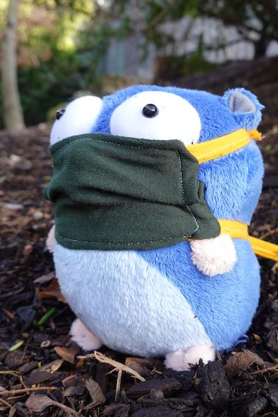

Today we celebrate the eleventh birthday of the Go open source release. The parties we had for Go turning 10 seem like a distant memory. It’s been a tough year, but we’ve kept Go development moving forward and accumulated quite a few highlights.
In November, we launched go.dev and pkg.go.dev shortly after Go’s 10th birthday.
In February, the Go 1.14 release delivered the first officially “production-ready” implementation of Go modules, along with many performance improvements, including faster defers and non-cooperative goroutine preemption to reduce scheduling and garbage collection latency.
In early March, we launched a new API for protocol buffers, google.golang.org/protobuf, with much-improved support for protocol buffer reflection and custom messages.
When the pandemic hit, we decided to pause any public announcements or launches in the spring, recognizing that everyone’s attention rightly belonged elsewhere. But we kept working, and one of our team members joined the Apple/Google collaboration on privacy-preserving exposure notifications to support contact tracing efforts all over the world. In May, that group launched the reference backend server, written in Go.
We continued to improve gopls, which enables advanced Go-aware support in many editors. In June, the VSCode Go extension officially joined the Go project and is now maintained by the same developers who work on gopls.
Also in June, thanks to your feedback, we open-sourced the code behind pkg.go.dev as part of the Go project as well.
Later in June, we released the latest design draft for generics, along with a prototype tool and generics playground.
In July, we published and discussed three new design drafts for future changes:
new //go:build lines for file selection,
file system interfaces,
and
build-time file embedding.
(We’ll see all of those in 2021, as noted below.)
In August, the Go 1.15 release delivered mainly optimizations and bug fixes rather than new features. The most significant was the start of a rewrite of the linker, making it run 20% faster and use 30% less memory on average for large builds.
Last month, we ran our annual Go user survey. We will post results on the blog once we’ve analyzed them.
The Go community has adapted to “virtual-first” along with everyone else, and we saw many virtual meetups and over a dozen virtual Go conferences this year. Last week, the Go team hosted Go day at Google Open Source Live (videos at the link).
We’re also incredibly excited about what’s in store for Go’s 12th year. Most immediately, this week Go team members will be presenting eight events at GopherCon 2020. Mark your calendars!
In February, the Go 1.16 release will include the new
file system interfaces
and
build-time file embedding.
It will complete the linker rewrite, bringing additional performance improvements.
And it will include support for the new Apple Silicon (GOARCH=arm64) Macs.
In August, the Go 1.17 release will no doubt bring more features and improvements,
although it’s far enough out that the exact details remain up in the air.
It will include a new register-based calling convention for x86-64
(without breaking existing assembly!),
which will make programs faster across the board.
(Other architectures will follow in later releases.)
One nice feature that will definitely be included is the
new //go:build lines,
which are far less error-prone than the
current // +build lines.
Another highly anticipated feature we hope will be ready for beta testing next year
is
support for fuzzing in the go test command.
Over the next year, we will continue to work on developing support for Go modules and integrating them well into the entire Go ecosystem. Go 1.16 will include our smoothest Go modules experience yet. One preliminary result from our recent survey is that 96% of users have now adopted Go modules (up from 90% a year ago).
We will also finally wind down support for GOPATH-based development:
any programs using dependencies other than the standard library will need a go.mod.
(If you haven’t switched to modules yet, see the
GOPATH wiki page
for details about this final step in the journey from GOPATH to modules.)
From the start, the goal for Go modules
has been “to add the concept of package versions to the working vocabulary
of both Go developers and our tools,”
to enable deep support for modules and versions throughout the Go ecosystem.
The Go module mirror, checksum database, and index
were made possible by this ecosystem-wide understanding of what a package version is.
Over the next year, we will see rich module support added to more tools and systems.
For example, we plan to investigate new tooling to help module authors publish new versions
(go release)
as well as to help module consumers update their code to migrate away from
deprecated APIs (a new go fix).
As a larger example,
we created gopls
to reduce many tools used by editors for Go support,
none of which supported modules, down to a single one that did.
Over the next year,
we’ll be ready to make the VSCode Go extension use gopls by default,
for an excellent module experience out of the box,
and we’ll release gopls 1.0.
Of course, one of the best things about gopls is that it is editor-neutral:
any editor that understands the
language server protocol
can use it.
Another important use of version information is tracking whether any package in a build has a known vulnerability. Over the next year, we plan to develop a database of known vulnerabilities as well as tools to check your programs against that database.
The Go package discovery site pkg.go.dev is another example of a version-aware system enabled by Go modules. We’ve been focused on getting the core functionality and user experience right, including a redesign launching today. Over the next year, we will be unifying godoc.org into pkg.go.dev. We will also be expanding the version timeline for each package, showing important changes in each version, known vulnerabilities, and more, following the overall goal of surfacing what you need to make informed decisions about adding dependencies.
We’re excited to see this journey from GOPATH to Go modules nearing completion and all the excellent dependency-aware tools that Go modules are enabling.
The next feature on everyone’s minds is of course generics. As we mentioned above, we published the latest design draft for generics back in June. Since then, we’ve continued to refine rough edges and have turned our attention to the details of implementing a production-ready version. We will be working on that throughout 2021, with a goal of having something for people to try out by the end of the year, perhaps a part of the Go 1.18 betas.
Go is far more than just us on the Go team at Google. We are indebted to the contributors who work with us with the Go releases and tools. Beyond that, Go only succeeds because of all of you who work in and contribute to Go’s thriving ecosystem. It has been a difficult year in the world outside Go. More than ever, we appreciate you taking the time to join us and help make Go such a success. Thank you. We hope you are all staying safe and wish you all the best.